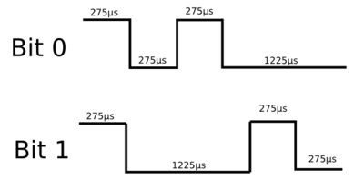
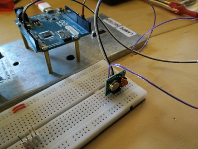
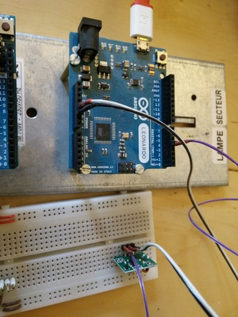

Après l’implémentation (plus ou moins réussie) du fameux protocole de commande à distance de la domotique sur Raspberry, je vous propose la même sur Arduino. Pour résumer, ce tuto vous explique comment commander des interrupteurs à distance. J’utilise les interrupteurs de la marque Chacon que l’on trouve à l’enseigne verte du bricolage.
Le constat, c’est que l’implémentation par certains internautes a été douloureuse sur Raspberry. Il fallait donc proposer quelque chose de plus efficace.
Autre difficulté: avec l’implémentation sur Raspberry, il faut être “root” pour émettre des commandes. Ça oblige à introduire une faille de sécurité sur le Rasberry pour pouvoir utiliser l’utiliser avec Jeedom (https://www.jeedom.com/site/fr/).
Détail d’un signal
Pour ce qui est de l’explication du protocole, vous trouverez tout sur L’article du Raspberry.
Pour résumer, les trames font 32 bits:
- 26 bits pour l’identification de la télécommande
- 1 bit mode “normal” ou touche “G”
- 1 bit “on/off”
- 4 bits d’identification de la touche de télécommande
Les bits sont encodé de la manière suivante:

J’ai fait le tour de ce que j’ai trouvé sur les différentes implémentations sur Arduino, mais rien de fonctionnel / simple. Beaucoup d’usines à gaz !
Je vous propose quelque chose d’ultra simple avec, en première partie, l’émission du signal.
Le montage


Relativement simple; on connecte :
- VCC au 5V de l’Arduino
- GND au GND de l’Arduino
- DATA à la pin 4 de l’Arduino (par exemple)
Le code
Tout est dans cette lib : HomeEasyByNoopy ou sur Github
Dézippez ce fichier dans le dossier “libraries” du dossier de sources de l’Arduino. Lancez, ensuite, l’IDE Arduino. Dans le menu, section “exemples”, vour trouverez les programmes suivant:
Emettre une télécommande
C’est assez simple; la librairie envoie les bits en respectant les temps au niveaux bas et niveaux hauts; on utilise des delayMicrosecond() pour ça.
#include <HomeEasyByNoopy.h>
// create a sender on pin 4 (listen on pin 0, no handler)
HomeEasyByNoopy sender(4, 0, 0);
void setup() {
// the frame will be repeated 15 times (default is 10)
sender.setEmitFrameCount(15);
}
void loop() {
// Emit the signal "ON" on controller A0A406, device A1
sender.emit(0x0a0a406, HE_DEVICE_A + HE_DEVICE_1, HE_ON);
// wait for 15 seconds before renewing the command
delay(15000);
}
Recevoir une télécommande
C’est un peu plus complexe. On va brancher (logiciellement) une interruption sur la pin qui reçoit le signal du recepteur (0, par exemple). A chaque changement (niveau haut/bas), l’interruption déclenchera l’exécution d’un bout de code. Attention, toutes les pins ne se branchent pas à des interruptions; vérifiez la doc de votre arduino. Mais généralement la pin 0 fonctionne.
En parallèle, un timer 16 bits va s’incrémenter toutes les 4µs environ (timer1, prescale à 64). On saura, ainsi calculer les temps aux niveaux hauts et bas avec un précision acceptable. Une fonction getCount() viendra lire le compteur et le remettre à 0. Pour tester :
#include <HomeEasyByNoopy.h>
// can emit on pin 4, Listen on pin 0, no handler
HomeEasyByNoopy sender(4, 0, 0);
void setup() {
Serial.begin(9600);
}
void loop() {
unsigned long controller;
unsigned int device;
unsigned char onOff;
unsigned char global;
// Beginning to listen
sender.EnableRead(true);
delay(2000);
sender.EnableRead(false);
// Listen is done
// Decoding what we received
// If controller is equal to 0, nothing was heard
sender.getReceiveCommand(&controller, &device, &onOff, &global);
// Display the result
Serial.println("##################");
Serial.println(controller);
Serial.println(device);
Serial.println(onOff);
Serial.println(global);
}
Les exemples
emit01
Programme simple qui émet une commande toutes les 15 secondes
emit02
Programme qui écoute la console série et envoie la commande reçue. Par exemple, pour envoyer:
- controller A0A406
- device C3
- allumer
Taper : A0A406+C3
Depuis une console linux (par exemple depuis le raspberry):
echo “A0A406+C3” > /dev/ttyACM0
receive01
Programme qui lance une écoute de 2 secondes et renvoie le résultat de commande sur la console série
receive02
Programme qui écoute en continu et envoie les commandes reçues sur la console série